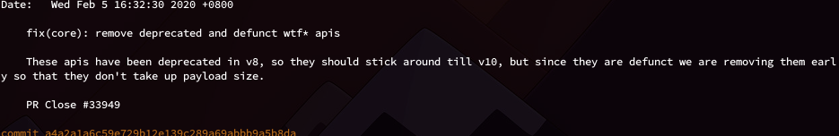
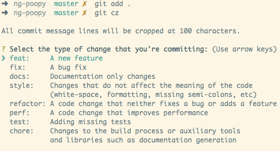

有时候写 Git Commit Message 的时候，不知道如何写好。最近在网上看到一个规范感觉很好,Angular 团队的 Git Commit 指南，配和 Commitizen 来使用效果相当好
Angular 格式
它的提交格式如下：
1 | <type>(<scope>): <subject> |
Type
有以下几种：
feat：新功能
fix: bug 修复
docs: 文档修改
style: 代码风格的修改（空格，格式，缺少分号等）
refactor: 代码重构
perf: 代码更改提高性能
test: 添加或更改测试
chore: 其他修改，如更改构建过程或辅助工具和库
Scope
本次更改涉及的范围
Subject
对变更的简洁描述
Body
可选的，用于介绍背后更改的动机或仅描述一些更详细的信息
Footer
可选的，用来宣布重大更改、链接已解决的问题，提及贡献者等。
样例
1 | git commit -m "fix(core): remove deprecated and defunct wtf* apis" \ |
使用多个 -m 来连接段落而不是简单的行

好处
这样结构化的信息使我们在游览 git log 的时候就非常方便
比如，我要查看所有 feat 、fix 类型的提交
1 | git log --oneline --grep "^feat|^fix" |
查看有多少 feat
1 | git log --oneline --grep "^feat" | wc -l |
可以直接由 commit log 各个生成 CHANGELOG。
生成 CHANGELOG
conventional-changelog 工具可以生成 CHANGELOG
安装：
1 | npm install -g conventional-changlog-cli |
使用：
1 | conventional-changelog -p angular -i CHANGELOG.md -s |
使用 Commitizen
commitizen 使用 git cz 命令来代替 git commit，强制我们使用合格的规范。

安装
1 | npm install -g commitizen |
安装好之后，如果不指定特定规范就和普通的 git commit 的一样。下面使用 AngularJS’s commit message convention
单个项目使用：
1 | npm init -yes |
全局使用：
1 | npm install -g cz-conventional-changelog |